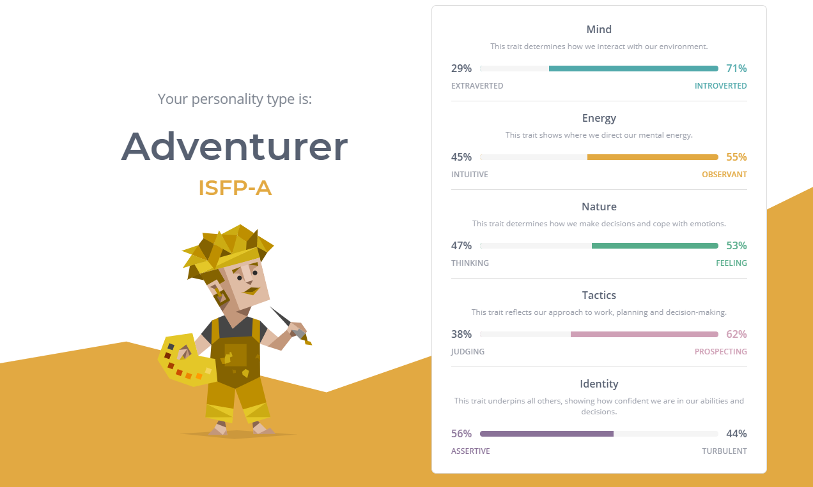
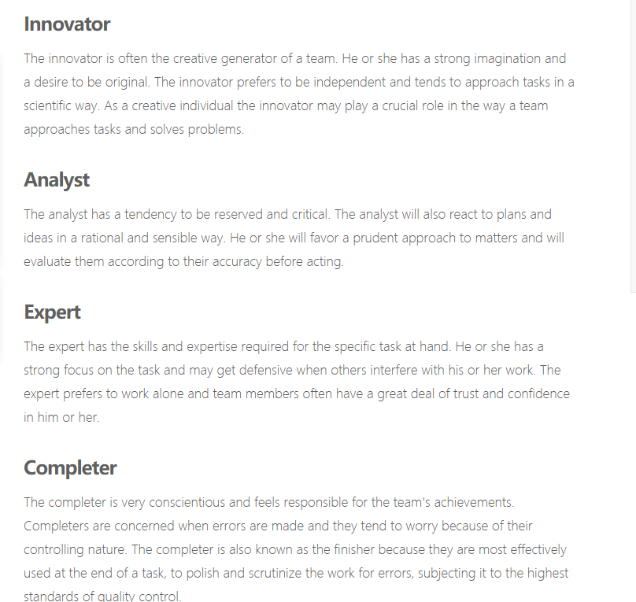
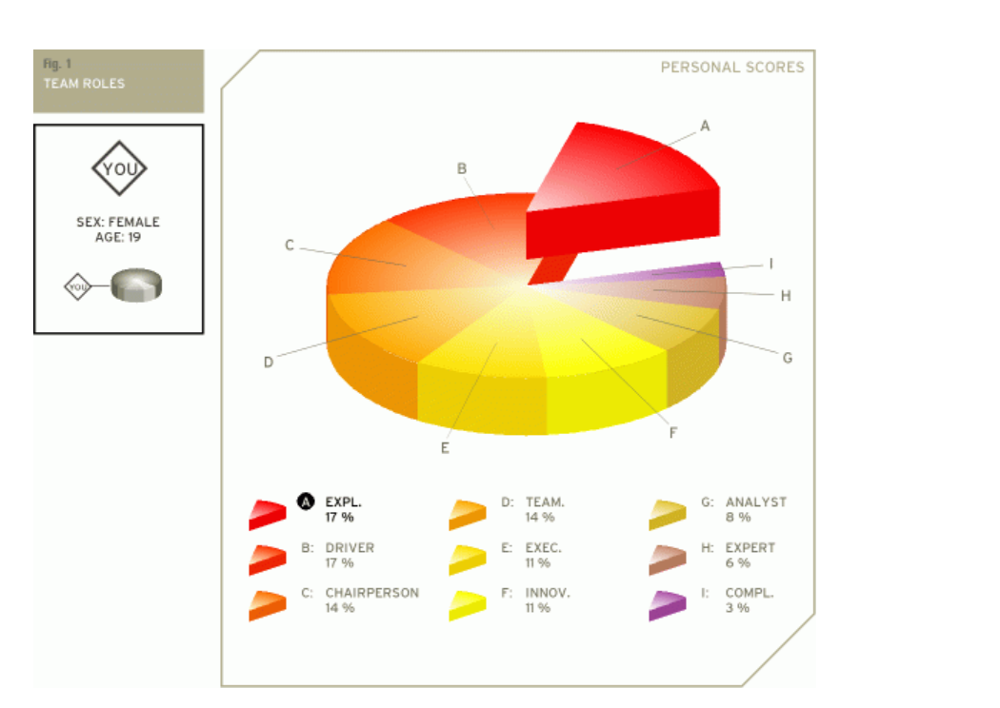

I am an IT beginner who is in her second year at RMIT, which means that I still have a lot of things to learn in IT. My given name is ShuyunLi and I am Chinese. Due to Covid, 2021 is also my second year in China doing online classes. Therefore, I am looking forward to coming back to the RMIT campus. I graduated from Elwood college, my main research was on language, I studied Japanese for 2 years when I was in high school. I enjoy music, cooking, pc games and love to meet new friends. I have a pet dog, named Zhuanzhuan. While preparing for my college entrance examination, I developed an interest in IT through my math teacher who is a graduate of the IT program. I am drawn to IT as it is a high-paying profession. More importantly, the IT industry covers a wide range of jobs in various industries. I chose RMIT because my agent told me that RMIT has a long history and has an excellent IT teaching team and program. I wanted to challenge myself by studying something new, so I chose RMIT’s IT program. Also, the city campus is near my apartment. I hope I can learn more about IT through my degree at RMIT.
My disadvantage is excessive perfectionism, accepting only the superficial phenomena of things and ignoring the possibility of deeper meaning, difficulty to make decisions, difficulty making long-term plans and a lack of social skills.
My advantages are the capacity for empathy and compassion, ISFP’s are good at being listeners and imitating. I am always enthusiastic, loyal, attentive to details, (especially those related to others), thoughtful, knowing what is required of me and a good team player, careful analysis of risks and an open mind to consider multiple solutions.
  